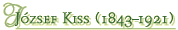
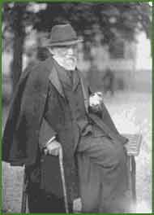

|  | |||
|  | |||
| József Kiss was a prominent figure of Hungarian poetry at the end of the 19th century. At first he wanted to be a rabbi, later he worked as an itinerant teacher. In 1890 he started A Hét (The Week), a literary periodical which became the first organ of modern Hungarian literature. | |||